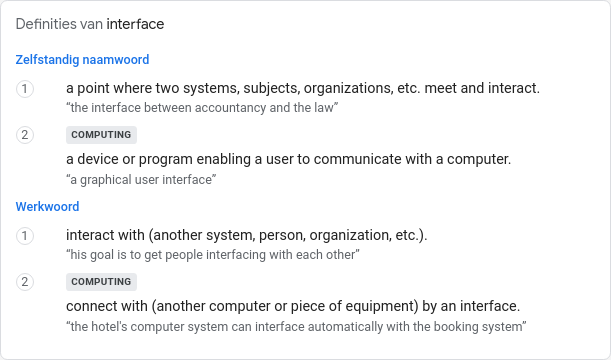
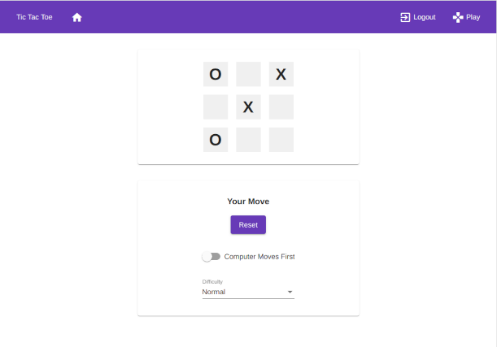
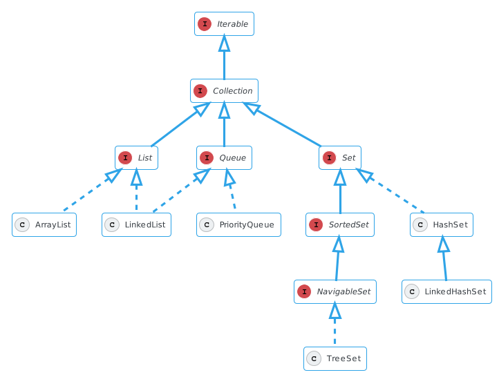

Interfaces
Contents
Interfaces#
De term interface#

Een goede Nederlandse vertaling voor het voor het Engelse woord interface bestaat helaas niet. “Koppel” is het beste wat Google Translate ons te bieden en is niet heel betekenisvol!

De definitie van interface maakt al meer duidelijk, een punt waar twee systemen bij elkaar komen en met elkaar interacteren.
User Interface#

Een user interface kennen we beter als term, waar we de (vaak grafische) voorkant bedoelen van een systeem waarmee de gebruiker interacteert. Vaak is dit een beperkte toegang tot functionaliteit, het achterliggende systeem zal vaak complexer zijn maar heeft daar middels deze interface geen toegang toe.
Application Programming Interface#

Programmatische toegang tot systemen gebeurt vaak via een application programming interface (API) waarbij een geselecteerde set van methoden zijn aan te roepen vanuit andere programma’s.
Een klasse als interface#
public class Location {
private double latitude;
private double longitude;
public Location() {
latitude = 0.0;
longitude = 0.0;
}
public Location(double latitude, double longitude) {
this.latitude = latitude;
this.longitude = longitude;
}
public double getLatitude() {
return latitude;
}
public double getLongitude() {
return longitude;
}
}
Als het gaat om klassen is de term interface al terloops genoemd waarmee wordt bedoeld welke velden en methoden toegankelijk zijn voor andere klassen. Het meest duidelijk wordt dit in het gebruik van de access modifiers public en private. Velden of methoden die public zijn, zijn onderdeel van de interface van de klasse waar andere klassen gebruik van kunnen maken.
Tekst lezen#
Tekst lezen doen we op veel manieren, bijvoorbeeld met tekstberichten via SMS, WhatsApp of Discord, maar ook via andere media als bijvoorbeeld eBooks of webpagina’s. Als we deze media in klassen willen vormgeven dan zullen dit verschillende klassen worden (bijvoorbeeld TextMessage en Ebook) want een teksbericht is écht iets anders dan een eBook of webpagina.
public class TextMessage {
// ...
}
public class Ebook {
// ...
}
Beide zullen tekst moeten kunnen lezen, om deze reden zou je graag willen dat de interface van de klassen een publieke methode read heeft. Zoals je weet kan dit kan worden opgelost met een abstracte klasse waar beide klassen van erven.
abstract class ReadableThing {
abstract String read();
}
public class TextMessage extends ReadableThing {
@Override
public String read() {
// ...
}
}
public class Ebook extends ReadableThing {
@Override
public String read() {
// ...
}
}
Bij het vormgeven van een klassenhiërarchie probeer je altijd de meer abstracte vorm te vinden, maar in dit geval is het onduidelijk. Wat is de meer abstracte vorm van een TextMessage of Ebook? Een ReadableThing? Of iets anders? Je zal het met ons eens zijn dat dit een lastig geval is want het wordt nu wel héél abstract en misschien zelfs wat gekunsteld …
We hebben hier te maken met een ontwerpprobleem, want eigenlijk zijn we hier niet op zoek naar de meest abstracte vorm van deze klassen, maar naar een manier om aan te geven dat de interface van de klassen een methode read moet hebben (los van een eventuele klassenhiërarchie).
interface#
public interface Readable {
String read();
}
Java heeft een oplossing om dit dilemma op te lossen door het definiëren van een interface.
van een
interfacekunnen geen objecten worden gemaakt (net alsabstractklassen)interfacemethoden hebben geen body (net alsabstractmethoden)alle
interfacemethoden moeten worden geïmplementeerd (net alsabstractmethoden)een
interfaceheeft geen concrete methodeneen
interfaceheeft geen constructorinterfacemethoden zijn standaardabstractenpublic
Een interface lijkt op een klassedefinitie en in het bijzonder een abstracte klasse, maar kent een paar belangrijke verschillen!
public interface Readable {
String read();
}
public class TextMessage implements Readable {
@Override
public String read() {
// ...
}
}
public class Ebook implements Readable {
@Override
public String read() {
// ...
}
}
Voor het implementeren van een interface door een klasse zie je dat het keyword implements wordt gebruikt, in tegenstelling tot extends in het geval van het overerven van klassen (zowel absracte als concrete klassen).
Single inheritance#
Klassen kunnen maar van één klasse overerven.
Maar klassen kunnnen meerdere interfaces implementeren!
public interface Encryptable {
String encrypt(String content);
String decrypt(String content);
}
Als het gaat om het lezen van tekst zal encyptie vaak een rol spelen, bijvoorbeeld om een tekstbericht veilig van een zender naar een ontvanger te transporteren. Maar ook als het gaat om eBooks waar een uitgever de tekst pas leesbaar wil maken als een gebruiker na een aankoop een sleutel ontvangt om het boek te mogen lezen. In beide gevallen zal tekst zowel versleuteld als ontsleuteld moeten kunnen worden.
public interface Readable {
String read();
}
public interface Encryptable {
String encrypt(String content);
String decrypt(String content);
}
public class TextMessage implements Readable, Encryptable {
@Override
public String read() {
// ...
}
@Override
public String encrypt(String content) {
// ...
}
@Override
public String decrypt(String content) {
// ...
}
}
Je ziet hier de syntax voor het implementeren van meerdere interface’s, steeds gescheiden door een komma. Alle methoden die zijn gedefinieerd in de interface’s moeten natuurlijk allemaal worden geïmplenteerd door de klassen!
Compositie#
public interface SafeReadable extends Readable {
String encrypt(String content);
String decrypt(String content);
}
Interfaces kennen het principe van overerving met hetzelfde keyword extends. Op deze manier kan je een verbijzondering maken van de interface Readable die methoden voor encryptie definieert (die eerder in de interface Encryptable waren gedefinieerd). Maar ook hier komt het weer neer op een ontwerpbeslissing waar de vraag moet worden beantwoord of deze combinatie noodzakelijk of nuttig is (of niet). Wat denk jij?
public class TextMessage implements SafeReadable {
@Override
public String read() {
// ...
}
@Override
public String encrypt(String content) {
// ...
}
@Override
public String decrypt(String content) {
// ...
}
}
Je zal straks het Java collections framework als voorbeeld zien waar heel duidelijk voor deze vorm van compositie is gekozen !
interface als type#
Laten we het voorgaande nu een concreet maken met de implementatie van de interface Readable door de concrete klassen TextMessage en Ebook.
public class TextMessage implements Readable {
private String sender;
private String content;
public TextMessage(String sender, String content) {
this.sender = sender;
this.content = content;
}
public String getSender() {
return this.sender;
}
public String read() {
return this.content;
}
}
public class Ebook implements Readable {
private String name;
private List<String> pages;
private int pageNumber;
public Ebook(String name, ArrayList<String> pages) {
this.name = name;
this.pages = pages;
this.pageNumber = 0;
}
public String getName() {
return this.name;
}
public int pages() {
return this.pages.size();
}
public String read() {
String page = this.pages.get(this.pageNumber);
nextPage();
return page;
}
private void nextPage() {
this.pageNumber = this.pageNumber + 1;
if(this.pageNumber % this.pages.size() == 0) {
this.pageNumber = 0;
}
}
}
Readable message = new TextMessage("ope", "It's going great!");
System.out.println(message.read());
ArrayList<Readable> textMessage = new ArrayList<>();
textMessage.add(new TextMessage("private number", "I hid the body."));
It's going great!
true
Een interface is een “type”, in dit geval kan worden gezegd dat variable message van type Readable is omdat de klasse TextMessage de interface Readable implementeert (en de methode read aangeroept die concreet is geïmplementeerd in TextMessage).
ArrayList<String> pages = new ArrayList<>();
pages.add("Split your methods into short, readable entities.");
pages.add("Separate the user-interface logic from the application logic.");
pages.add("Always program a small part initially that solves a part of the problem.");
pages.add("Practice makes the master. Try out different things for yourself and work on your own projects.");
Ebook book = new Ebook("Tips for programming.", pages);
Maar in dit geval is meer specificiteit nodig, een Readable is geen Ebook omdat methoden worden aangeroepen die specifiek zijn voor een Ebook en niet gedefinieerd zijn in de interface Readable (in dit geval de methode pages).
int page = 0;
while (page < book.pages()) {
System.out.println(book.read());
page = page + 1;
}
Split your methods into short, readable entities.
Separate the user-interface logic from the application logic.
Always program a small part initially that solves a part of the problem.
Practice makes the master. Try out different things for yourself and work on your own projects.
Een praktisch voorbeeld#

Het Java collections framework is een voorbeeld waar veel gebruik gemaakt wordt van interfaces.
List<String> names = new ArrayList<>();
names.add("Simone");
names.add("ONBEKEND");
names.add("Dion");
names.add("Kars");
names.add("Zonne");
names.add("David");
true
Iterator<String> iter = names.iterator();
while (iter.hasNext()) {
String value = iter.next();
if (value.equals("ONBEKEND")) {
iter.remove();
} else {
System.out.println(value);
}
}
Simone
Dion
Kars
Zonne
David
De Iterable inteface definiëert een methode iterator die door ArrayList is geïmplementeerd. We kunnen van dit gegeven gebruik maken om eigen typen iterable te maken.
Terzijde, je zag dat we via de iterator ook elementen veilig kunnen verwijderen!
public class Person {
private String name;
public Person(String name) {
this.name = name;
}
public String toString() {
return name;
}
}
public class Family implements Iterable<Person> {
private List<Person> members;
public Family() {
members = new ArrayList<Person>();
}
public void addMember(Person member) {
members.add(member);
}
public Iterator<Person> iterator() {
return members.iterator();
}
}
Family fam = new Family();
fam.addMember(new Person("Suzanne"));
fam.addMember(new Person("Peter"));
fam.addMember(new Person("Marlies"));
for (Person member: fam) {
System.out.println(member);
}
Suzanne
Peter
Marlies
Een ander voorbeeld#
De interface Comparable.
names
[Simone, Dion, Kars, Zonne, David]
Collections.sort(names);
names
[David, Dion, Kars, Simone, Zonne]